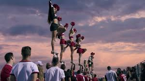
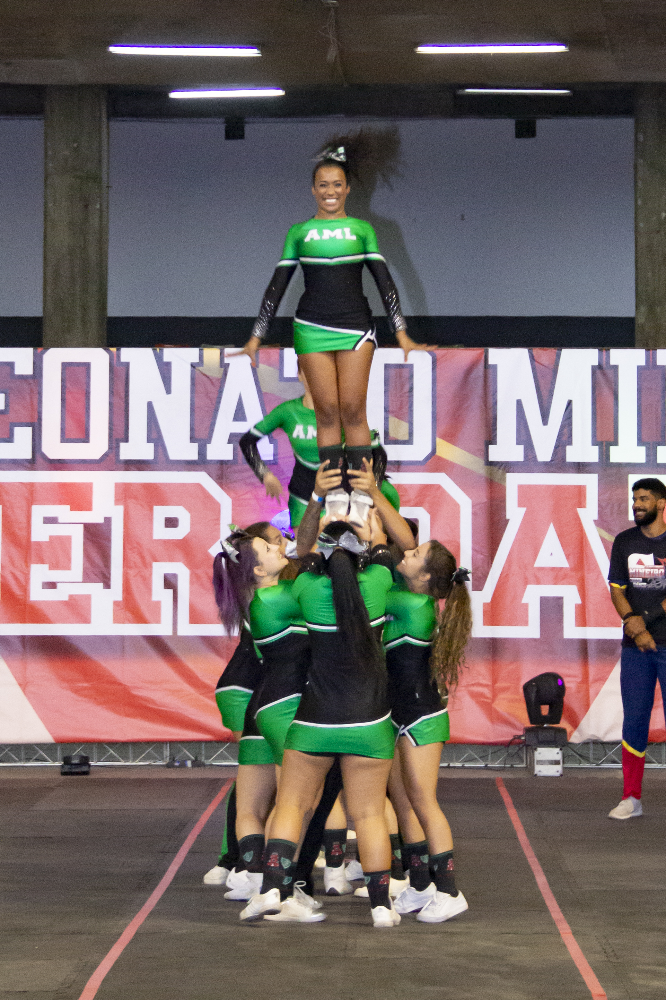

Partner
Esse é um stunt pesado e perigoso, porque tem apenas uma pessoa carregando a/o flyer. Logo os dois tem que ficar muiro espertos e firmes para manter a estabilidade e controle do stunt.Nunca façam sem segurança.Para praticá-lo requer muita confiança e capacidade de diálogo com seu Partner e como em todos stunt muita atenção e derminação
Base Dupla
 Esse stunt já consegue ser bem mais estável o que facilita e faz precisar de menos força. Isso acontece porque, como o nome diz, agora tem mais uma base, onde a pessoa que seria o partner se torna a central e a outra vira a lateral, que tem como trabalho mais importante estabilizar o stunt.Mas não para por aí, ele/ela também se torna reponsável pelos giros e ajuda nos dismontes (que nunca são feitos sozinhos).
Esse stunt já consegue ser bem mais estável o que facilita e faz precisar de menos força. Isso acontece porque, como o nome diz, agora tem mais uma base, onde a pessoa que seria o partner se torna a central e a outra vira a lateral, que tem como trabalho mais importante estabilizar o stunt.Mas não para por aí, ele/ela também se torna reponsável pelos giros e ajuda nos dismontes (que nunca são feitos sozinhos).
Grupo stunt
Esse é o grupo stunt, aqui a sincronia é muito importante porque pelo menos tres pessoas carregam a/o flyer. Também pode ser 4 bases se tiver a frontal, mas de qualquer manera são pelo menos quatro pessoas tentando se organizar para realizar os movimentos. Aqui a central e a lateral se tornam mais parecidas e tendem a ficar de lado em relação a flyer para cada um pegar um pé, na lib a posição tende a se parecer de base dupla, mas aqui talvez o peso fique mais dividido. O motivo dessa mudança é o surgimento da traseira, ela é uma base, que como seu nome diz, fica atrás, ela segura acima dos tornozelos seu papel é, sobretudo, dá um leve na flyer, fazer força para cima,mas também estabiliza a flyer. A frontal é parecida com a traseira, mas talvez a estabiização seja nos punhos das outras bases e fica na frente é claro.